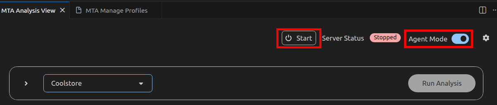
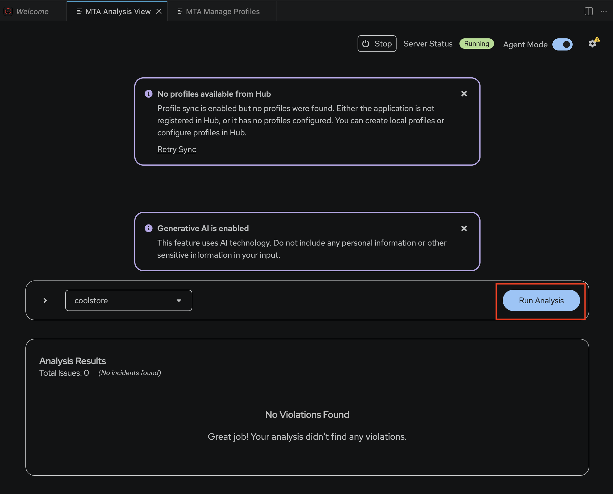

Lab 8: Analyze and Modernize the Application
In this lab, you’ll use the MTA extension with Developer Lightspeed and Agent Mode to analyze the Coolstore application and apply AI-assisted recommendations to migrate it from JBoss EAP 7 to JBoss EAP 8.
By the end of this lab, you will have:
-
Analyzed the Coolstore application using the configured MTA profile
-
Reviewed AI-assisted migration recommendations
-
Applied recommended code changes using Developer Lightspeed
-
Re-analyzed the application and verified the updated results
-
Built the migrated application successfully
Analyze the Application
-
Return to the MTA Analysis View, confirm that Agent Mode is enabled, and select Start to activate the newly created profile.

-
Select Run Analysis to begin the application analysis. MTA, together with Developer Lightspeed and the configured GenAI model, analyzes the application source code. Wait until the analysis reaches 100% completion.

Figure 1. Run Analysis(Click the image to view it in full size in a new browser tab) -
Review the analysis results. The results identify migration issues and provide guided recommendations for migrating the application from EAP 7 to EAP 8.
 Figure 2. Analysis Results(Click the image to view it in full size in a new browser tab)
Figure 2. Analysis Results(Click the image to view it in full size in a new browser tab) -
Select the reported issue
javax groupId has been replaced by jakarta.platformand review the accompanying Arcade video. The video demonstrates how Developer Lightspeed proposes code changes directly within the source files.
| Applying recommended changes can introduce additional impacts in other parts of the codebase. When Agent Mode is enabled, Developer Lightspeed can identify and suggest these follow-on changes. Without Agent Mode, these dependent updates may not be detected or reflected in the analysis. |
-
Apply the recommended changes and repeat the analysis. Observe how the total number of reported issues decreases as issues are resolved, and review the updated analysis results.
Build the Migrated Application
-
Open the terminal and run the following command:
./mvn clean packageAI-generated changes may introduce errors in the pom.xmlfile. A separate repository (i.e${GITLAB_URL}/mta-apps/coolstore-migrated.git) containing the fully migrated application is available for comparison and verification. You can also use it to correct your implementation if required
Accepted solutions can be captured in the Solution Server of the MTA Hub and can be reused to generate code changes for future applications. This allows migration solutions to be applied consistently across multiple applications.
Once the analysis is complete, all issues are resolved, and ./mvn clean package succeeds, you have completed the application migration exercise.